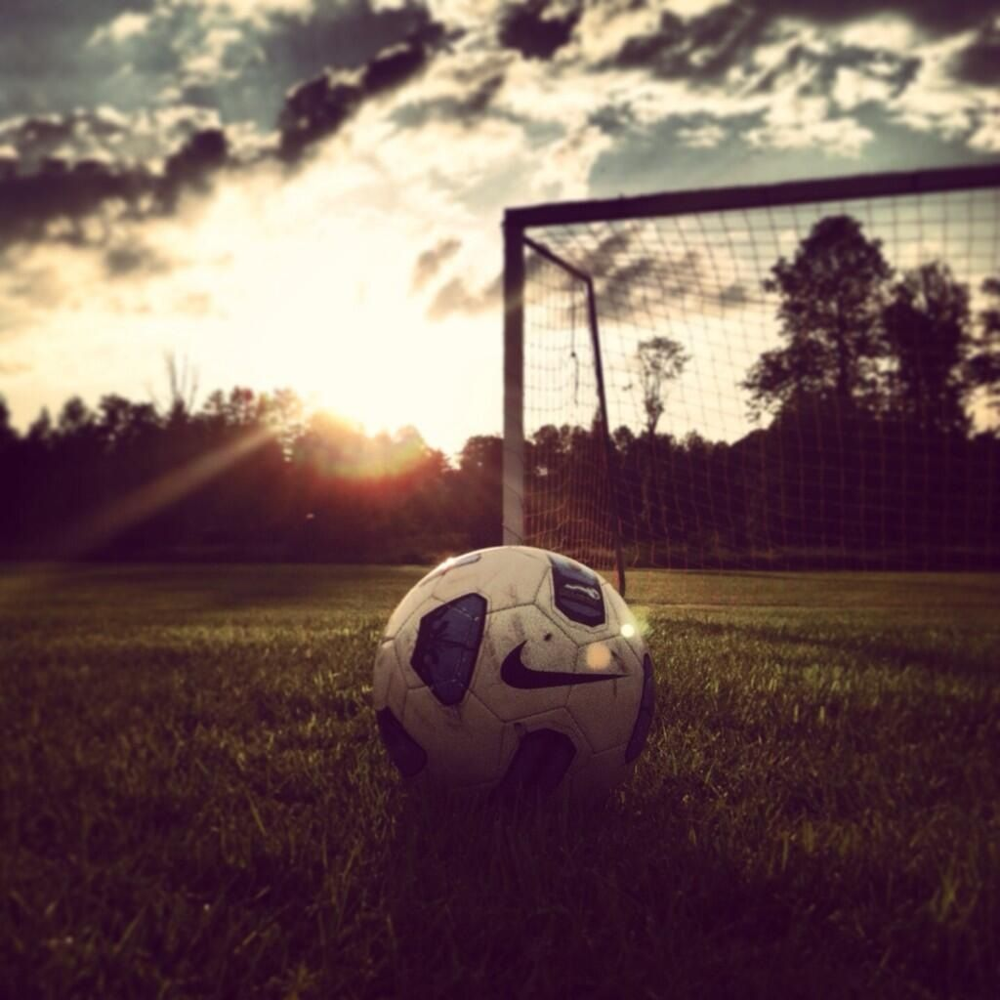
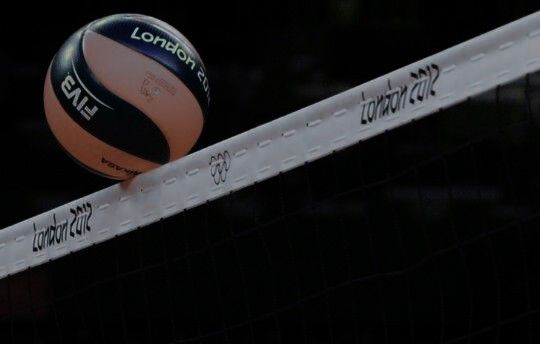
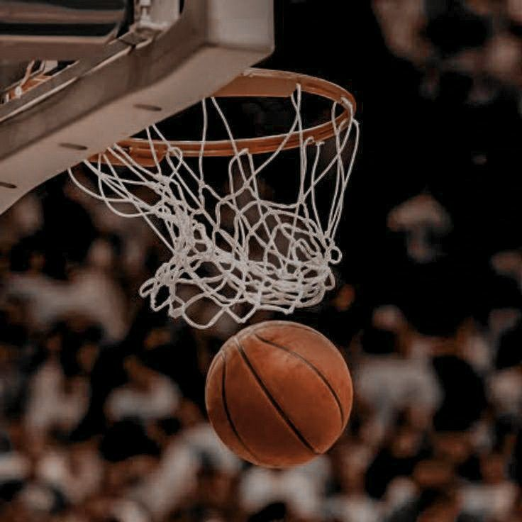

Deportes que Amo
Futbol
El futbol es uno de los deportes que mas practico actualmente, ya sea con amigos o familiares. Hace mucho salia con mis vecinos a jugar, pero por las actividades diarias ya no puedo ir a jugar.
Voleibol
El Voleibol es uno de mis deportes favoritos desarrollados ya mas grande en la prepa; participe en varios torneos como 4 o colocador. Recuerdo mucho cuando jugabamos en otras prepas, estaba muy padre el ambiente y consegui buenos amigos. La mejor parte es que despues de jugar ibamos a comprar comida y nos saltabamos algunas clases por lo mismo.
Basquetbol
No soy malo, ni tampoco bueno, pero me gusta mucho jugarlo con mi hermano. En las vacaciones es cuandoi mas jugamos, usualmente vamos a unas canchas que tienen duela de plastico en Rinconada ya que nuestras canchas estan todas maltratadas por los ni;os que se cuelgan en ella, por eso es que nosotros no jugamos en ella.
